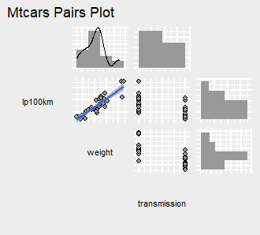

loon plots --> ggplots
Wayne Oldford and Zehao Xu
2025-06-11
Source:vignettes/loon2ggplot.Rmd
loon2ggplot.RmdPackage loon provides the truly direct manipulation and
package ggplot provides a unified data structure so that it
is easy to be extended. Data analysts who explore data interactively can
at any time turn a snapshot of their interactive loon plots
into ggplots by the simple translation function
loon2ggplot().
In loon, the current view of any loon plot
p can be turned into a grid plot in a variety
of ways:
plot(p)-
grid.loon(p)orgrid.loon(p, draw = FALSE) -
loonGrob(p)to create the grid object.
The corresponding grid object is a rich structure that
can be exported, printed, edited, and incorporated into other
grid structures. However, adapting that structure to
slightly different presentations is a bit of a challenge compared to a
ggplot (also ultimately a grid structure).
In this section, we turn the current state of any loon
plot into a ggplot plot which can then be modified
following the rules of the ggplot2 grammar.
loon –> ggplot via loon2ggplot()
Basic
Plot the cars ‘horsepower’ versus ‘lp100km’ (100 km per liter) on
data mtcars.
library(dplyr)
library(loon)
mt <- mtcars %>%
rename(transmission = am, weight = wt, horsepower = hp) %>%
mutate(lp100km = (100 * 3.785411784) / (1.609344 * mpg))
p <- mt %>%
with(
l_plot(horsepower, lp100km,
color = gear)
)Turn p (a loon widget) to a
ggplot object via a simple function
loon2ggplot().
library(loon.ggplot)
g1 <- loon2ggplot(p)
g1The object g1 is a ggplot graphic.
Comparing with the original loon widget, the
gg one provides a legend that is helpful to decode the
mapping systems. However, since loon widgets do not store
the original data information, the labels of each legend are the
hex-codes of the color. To better convey the graphics from aesthetics to
data, we can edit the legend with more reasonable labels and add titles
on top to emphasize the variables.
g1 +
scale_fill_manual(values = c("#999999", "#A6CEE3", "#FFC0CB"),
name = "gear",
labels = c("4", "3", "5")) +
ggtitle(label = "horsepower versus lp100km",
subtitle = "loon --> ggplot") +
theme(
plot.title = element_text(color = "red", size = 12, face = "bold"),
plot.subtitle = element_text(color = "blue")
)Comparing with static grid (via
loonGrob()), modification of ggplot (via
loon2ggplot) is simpler and more creative. Moreover,
ggplot has over 100 extended packages. After transforming
from loon to ggplot, users can continually
take advantage of these extensions.
Turn an l_compound Object to a patchwork
Object
Considering the following loon pairs plot (an
l_compound widget) with three variables ‘lp100km’ (100 km
per liter), ‘weight’ (car weight) and transmission (automatic or
manual).
mt %>%
select(lp100km, weight, transmission) %>%
# and pass the built plot on
l_pairs(showHistograms = TRUE,
linkingGroup = "Motor Trend 1974") -> # and assign the result.
l_ppIt produces an interactive pairs plot with histograms on the margins
(see ?l_pairs) and assigns the result to l_pp
(which could have been assigned at the beginning with <-
as well). Now, turn this pair plot to a gg object. Note
that the compound loon widget like l_pairs
(the shown one), l_ts or l_facet, etc, are
created by patchwork.
Features like theme, labels can be set by the
patchwork rule.
library(patchwork)
g2 <- loon2ggplot(l_pp)
g2The object g2 is a patchwork object. We can
fit a smooth line on the lp100km vs weight scatterplot and
draw a density curve on the weight histogram. Additionally,
a title is added.
# Add a regression line on the `lp100km vs weight` scatterplot
g2$patches$plots[[1]] <- g2$patches$plots[[1]] +
geom_smooth(method = "lm")
# Add a density curve on the `weight` histogram
g2$patches$plots[[4]] <- g2$patches$plots[[4]] +
geom_density()
# Add a title
g2 <- g2 +
patchwork::plot_annotation(title = "Mtcars Pairs Plot")
g2
Function loon.ggplot()
loon.ggplot() function in loon.ggplot
package is an S3 method and gathers features of both
loon2ggplot() and ggplot2loon(). It can take
either a loon widget or gg object and
transform back and forth.
Loon to ggplot:
loon.ggplot(loon) is equivalent to
loon2ggplot(loon).
See the vignette A Grammar of Interactive Graphics for
more.